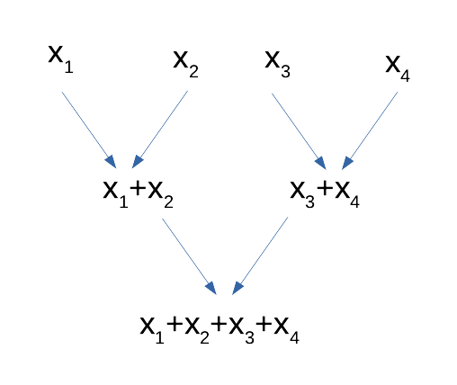

import os
from pyspark.sql import SparkSession
spark = (SparkSession
.builder
# default url of the internally accessed Kubernetes API
# (This Jupyter notebook service is itself a Kubernetes Pod)
.master("k8s://https://kubernetes.default.svc:443")
# Executors spark docker image: for simplicity reasons, this jupyter notebook is reused
.config("spark.kubernetes.container.image", os.environ['IMAGE_NAME'])
# Name of the Kubernetes namespace
.config("spark.kubernetes.namespace", os.environ['KUBERNETES_NAMESPACE'])
# Allocated memory to the JVM
# Stay careful, by default, the Kubernetes pods has a higher limit which depends on other parameters.
.config("spark.executor.memory", "4g")
.config("spark.kubernetes.driver.pod.name", os.environ['KUBERNETES_POD_NAME'])
# dynamic allocation configuration
.config("spark.dynamicAllocation.enabled","true")
.config("spark.dynamicAllocation.initialExecutors","0")
.config("spark.dynamicAllocation.minExecutors","1")
.config("spark.dynamicAllocation.maxExecutors","5")
# Ratio match the number of pods to create for a given number of parallel tasks
# (100 parallel, ratio of 1, one aims at 100 pods, with 0.5 it would be 50 pods)
.config("spark.dynamicAllocation.executorAllocationRatio","1")
.config("spark.dynamicAllocation.shuffleTracking.enabled","true")
.getOrCreate()
)Spark ML
Lab 2
1. Before you start
- connect to SSPCloud
- if necessary, create an account with your ENSAI e-mail address
- Go to
Mes services- Create a new service :
Jupyter-pyspark - Wait for a few seconds
- Clic on
Copier le mot de passeand thenOuvrir le service - On the next page, paste it in the appropriate place and
Log in - You are now in your Jupyter service
- Create a new service :
- Import file named
lab2-SSPCloud.ipynb- open it and follow the instructions
At this end of this lab
- Export your notebook
- File > Export Notebook As … > Export Notebook To HTML
- Delete your Jupyter service !
In this tutorial, we are going to perform exploratory and explanatory analyses of a massive dataset consisting in hundreds of thousands of AirBnB listings, as made available by the Inside AirBnB project.
Rémi Pépin has loaded a lot these listings on AWS at this address: s3a://remipepin/diffusion/ensai/airbnb
2. How to distribute elementary statistical tasks?
The map and reduce principle
When your data is distributed, i.e is spread out across multiple hard disks / memories on different logical or physical machines, it is clearly not possible to load everything in memory to perform some computation. (No computer from the cluster would have enough storage space / memory space to load the full data set, and the exchange of information between the nodes of the cluster would take considerable amounts of time.) What can you do then?
A surprisingly satisfying situation is when your algorithm can be expressed in a map-and-reduce model. A map step, in computer science, is the equivalent a function in mathematics: from a given entry, return an output. Examples include counting the number of occurrences of a word in a text, squaring some number, subtracting some number, etc. A reduce step takes two inputs and produces one input, and can be called recursively onto its own outputs, progressively yielding the final result through a pyramid of accumulators (see diagram here under). Popular reduce functions include (pairwise) concatenation of character strings, (pairwise) product, (pairwise) minimum and (pairwise) maximum. But pairwise addition is probably the most used reduce function, with the aim goal of performing a complete addition:
Hadoop’s MapReduce is the name of what was to become today Apache Spark. The persons behind this framework were among the first to advocate for the map-and-reduce mode in order to achieve efficient parallelisation. Unfortunately, the similarity of the names causes a lot of confusion between the map-and-reduce theoretical model and the concrete Hadoop implementation. I will use “map-and-reduce” to help distinguish the algorithmic concept from the MapReduce program, but this is not standard in the literature.

Why is the map-and-reduce scheme so interesting? Well, say you have \(n\) entries and \(k\) worker nodes at your disposal. The map operation can always be performed locally on each node, since the transformation does not depend on the rest of the data set. This is an embarrassingly parallel problem and we roughly divide the execution time by \(k\). Then, most of the reduce steps can also happen on the worker nodes, until the local data has been completely summarized. This also an \(k\)_fold acceleration! Then, there remains only \(k\) reduce steps, and since \(k \ll n\), this is usually quite negligible, even though the (potentially high) networking costs happen at this step. There is still some cost of task coordination and data exchange, but this usually small compared to the costs of parallelisation.

The reduce step
A reduce function is an associative function \(f: E \times E \mapsto E\), where associativity means \(\forall (a,b,c) \in E^3, f(a,f(b,c))=f(f(a,b),c)\). This is required because the distribution of data blocks across the nodes is random, and that we want to minimize data transmission between the nodes.
Moreover, \(f\) may or may not be commutative, in the sense that \(f(a,b)=f(b,a)\). If it is the case, such as with addition and multiplication, then the computing may happen in no particular order. This means that the central node need not wait for some partial results to be returned by a belated node. On the contrary, if \(f\) is not commutative, (a) the worker nodes must apply the function in a defined order, (b) the central node needs to reduce the intermediate outputs in a defined order, (c) it may have to delay the final reduce steps because of a lingering node.
The reduce function must not be defined on \(E=\mathbb{R}\). For instance, in the context where data is a collection of text documents, a word-count function may return accumulator objects looking like: ((word1,count1), (word2,count2)). Also, the accumulators — that is, the outputs of the each intermediate reduce step — are not necessarily exactly the cumulative version of the final statistic our algorithm outputs! Rather, accumulators are information-dense, fast-to-compute summary statistics from which the required final statistics can be obtained.
Imagine you want to count the frequency of the vocal E in English, given a collection of texts. It is faster to count the number of Es as well as the total number of characters than to accumulate directly the frequencies, as shown in this diagram:

Online algorithms
An online algorithm is an algorithm with an inner state that can be actualized at low cost for any new arrival of data. A good metaphor is track-keeping of the number of people on a bus: every time a person enters or leaves, you apply ±1 to the count, without the need to systematically recount everyone. Said otherwise, an online algorithm is any algorithm whose last result can be actualized from new data, at a smaller cost than an alternative algorithm that uses both old and new data from scratch.
It turns out that respecting the map-and-reduce model gives us online algorithms for free, where the inner state of the algorithm is the output from the last reduce call. Indeed, writing \(s_\text{old}\) and \(s_\text{new}\) the old and new states (the old and new summary statistics), and \(x_new\) the latest data point, we have:
\[s_\text{new}=\text{reduce}(s_\text{old}, \text{map}(x_\text{new}))\]
Thus, writing an algorithm following the map-and-reduce model gives you both a parallelized batch algorithm and a stream algorithm at once.
Number of passes
So far we have discussed algorithms that require only one map and one reduce functions. But for some statistics, it is not sufficient. For instance, if we want to count the number of texts where the letter E is more common than average, we first have to compute the average frequency in a first pass, then to count the texts where the frequency exceed this number with a second one. We can NOT do this in only one run, since the global average frequency is not known !
Each run is called a pass and some algorithms require several passes.
Limits
- Not all statistical algorithms can be expressed according to the map-and-reduce algorithm, and when they can, it may require a significant re-writing compared to the standard algorithms.
- There may be a trade-off between the number of passes, the speed of each map / reduce steps and the volume of data transferred between each reduce step.
✍ Hands-on 1
You are given
errors, a distributed vector of prediction errorserrors = [1, 2, 5, 10, 3, 4, 6, 8, 9]Write a map-and-reduce algorithm for computing the total sum of squares.
- You may want to create a Python version of this algorithm, using the
map(function, vector)andreduce(function, vector)functions or you may use lambda-functions - You have to import
reducefrom thefunctoolsmodule
- You may want to create a Python version of this algorithm, using the
Write two different map-and-reduce algorithm for computing the mean sum of squares. (One may include a final \(O(1)\) step.)
Is the median easy to write as a map-and-reduce algorithm? Why?
Given a (distributed) series of numbers, the variance can be straightforwardly expressed as a two-pass algorithm: (a) in a first pass, compute the mean, then (b) in a second pass, compute the mean of the errors to the mean. Can it be expressed as a one-pass only algorithm? Is it more expensive to compute variance and mean instead of the variance alone?
3. Application on Airbnb Data
from pyspark.sql.types import FloatType, IntegerType, DateType
from pyspark.sql.functions import regexp_replace, col
listings_raw = spark.read.csv("s3a://remipepin/diffusion/ensai/airbnb", header=True, multiLine=True, escape='"')
listings = (listings_raw
.withColumn("beds", listings_raw["beds" ].cast(IntegerType()))
.withColumn("bedrooms", listings_raw["bedrooms"].cast(IntegerType()))
.withColumn("time", listings_raw["last_scraped"].cast(DateType()))
.withColumn("price", regexp_replace('price', '[$\\,]', '').cast(FloatType()))
.select("id", "beds", "bedrooms", "price", "city", "time")
.dropna() # remove lines with missing values
)
listings_raw.cache()
listings.cache()DataFrame[id: string, beds: int, bedrooms: int, price: float, city: string, time: date]✍ Hands-on 2
How many lines do the raw and the formatted datasets have?
How many columns are there?
- Can you list all the available columns?
Spark SQL’s summary() method
In Spark SQL, elementary univariate summary statistics can also be obtained through the summary() method. The summary() method takes either the names of the statistics to compute, or nothing, in which case it computes every possible statistics:
listings.summary("count", "min", "max").show() # computes the selection of statisticslistings.summary().show() # computes every possible statisticsThis is a way to incite you to compute all the statistics you want at the same moment : it avoids an extra pass on the data set because all accumulators can be computed simultaneously. You can fin a list of all supported statistics here in PySpark documentation: count, mean, standard-deviation, minimum, maximum, approximate median, approximate first and last quartiles. Null (missing) values will be ignored in numerical columns before calculation.
Spark ML
Spark ML is a Spark module that allow us to execute parallelised versions of most popular machine-learning algorithms, such as linear or logistic regression. However, we can also use Spark ML to compute elementaty univariate summary statistics. However the philosophy is quite different, and is worth explaining.
The syntax of Spark ML may feel artificially convoluted ; this not only an impression, it is convoluted. However, there are grounds for this situation :
- Spark ML has been built on top of Spark years into the project, and the core of Spark is not well adapted to machine-learning ;
- Spark ML is intended for much more advanced treatments than unviariate statistics, and we will see linear regression as an exemple at the end of this tutorial
Step 1: vectorisation. A little counter-intuitively, spark ML operates on a single column of your data frame, typically called features. (Features is the word used in the machine-learning community for “variables”, see “Vocabulary” section hereunder.) This features column has the Vector type: each element contains an array of floating-point numbers, representing a subst of the variables from your dataset. The key is that this features column is usually redundant with the rest of the data frame: it just ensures the proper conversion from any type we wish (string, integer…) to a standardized numeric format. Indeed, it is often derived from the other columns, as this image illustrates:

Unfortunately for us, the construction the features column is not performed automatically under the hood by Spark, like when doing statistics in R. On the contrary, we have to construct the column explicitly. The VectorAssembler() constructor is here for that:
from pyspark.ml.feature import VectorAssembler
vectorizer = VectorAssembler(
inputCols = ["price", "beds", "bedrooms"], # the columns we want to put in the features column
outputCol = "features", # the name of the column ("features")
handleInvalid = 'skip' # skip rows with missing / invalid values
)
listings_vec = vectorizer.transform(listings)
# Reminders:
# Spark data sets are immutable: a copy is returned, and the original is unchanged.
# Spark operations are lazy: listings_vec just contains the recipe for building vector column
# but no item of the column is computed unless explicitly asked to.
listings_vec.show(5) # The first 5 values of the features column are computed.Step 2: summarization. Now that we have a vector column, we can use a Summarizer object to declare all the statistics we want to compute, in a similar fashion than with the Spark SQL summary() method. The following statistics are known: mean*, sum*, variance*, standard-deviation*, count*, number of non-zero entries, maximum*, minimum*, L2-norm, L1-norm, as can be read in the documentation. (Stars (*) denote statistics that could also be computed with the summary() method. Approximate quartiles are not computed.) Summarizers are created with the Summarizer.metrics() constructor. Here again, you are incited to declare all the summaries at once, so that they can all be computed in one pass:
from pyspark.ml.stat import Summarizer
summarizer = Summarizer.metrics("count", "min", "max")
listings_vec.select( summarizer.summary(listings_vec.features), ).show(truncate=False)
# By default, the output of columns is capped to a maximum width.
# truncate=False prevents this behaviour.This produces the output:

✍ Hands-on 3
- Is
listings.summary()slower to run thanlistings.summary("count", "min", "max")? Why?- You can measure time in Python with this simple template:
from timeit import default_timer as t start = t() # the thing you want to measure print("Time:", t()-start) - Compute the average number of beds per property in Barcelona in four different ways:
- Which method is the fastest?
directly with the Spark SQL mean function,
using
summary(),using a
Sumarizerobjectlocally after you collected the bed columns.
Despite the operation being very common, Spark does not provide a simple syntax to collect a column as a local array. A work-around is to use the Pandas package and the
asPanda()method (documentation). First install Pandas with!pip install pandas. Then you can collect a local copy of a dataframe calleddfwith:df_local = df.toPandas(). A Pandas data frame possesses amean()method, that compute the mean of each column of the data frame: more details are in Pandas’ documentation.
# Spark SQL
# summary()
# Sumarizer
# locally after you collected the bed columns
# !pip install pandasThe most simple model is often surprisingly difficult to beat!
- Compute the mean price on the data set as a predictor for an AirBnB listing’s price and the total sum of squares. (We will elaborate in the next section.)
4. Regression with Spark ML
A better way to predict prices is to build a regression mode, which in Spark falls under the broad category of machine-learning problems. Regressions thus belong the the ml module, often called Spark ML, like the summarizer that we saw just before.
There is an old module called mllib that is also called “Spark ML”. That can cause confusion.
The ml module is built in a distinctive fashion than the rest of Spark. Firstly we have seen with Summarizer that we can not readily use the columns and that instead columns have to be first converted to a Vector format with the VectorAssembler function.
Secondly, we need to distinguish between two different types of object classes: transformers and estimators classes. Transformers are a class of objects representing any process that modifies the dataset, and returns the modified version. It has a transform() method. Estimators on the other hand are classes of objects representing any process that produces a transformer based on some computed parameters from the data set. It has a fit() method. It is easier with an example. In the following example, regressor is an estimator, and we compute the regression coefficients with the fit() method. This produces model, the regression model itself, which is of class transformer. Indeed, we can use its transform() method to add predictions to the initial dataset.
from pyspark.ml.feature import VectorAssembler
from pyspark.ml.regression import LinearRegression
vectorizer = VectorAssembler( # copy-pasted from previous section...
inputCols = ["beds", "bedrooms"], # ... but without price
outputCol = "features",
handleInvalid = 'skip'
)
listings_vec = vectorizer.transform(listings)
regressor = LinearRegression(featuresCol="features", labelCol="price")
model = regressor.fit(listings_vec)
model.coefficients
model.intercept
listings_pred = model.transform(listings_vec)
listings_pred.show() # model and predictions from the regressionVocabulary
The machine-learning community leaves at the border between computer science and mathematics. They borrow vocabulary from both sides, and it can sometimes be confusing when reading software documentation. Spark’s lib module uses conventions from this community :
- label, rather than “independent variable”. This comes from the fact that historically, machine-learning has originated from problems such as image labeling (for instance digit recognition). Even for continuous variables, machine-learners may use “label”
- features, rather than “dependent variables” ; the number of features is often dubbed \(d\) like dimension (instead of \(p\) in statistics)
- machine-learners don’t use the word “observation” or “unit” and prefer row
Pipelines
If you come to repeat several times the same series of transformations, you may take advantage of the pipeline objects. A pipeline is just a collections of steps applied to the same dataset. This helpful when you:
- repeat the same analysis for different regions / periods
- want to control predictions on a new, unseen test set, and ant to apply exactly the same process
from pyspark.ml.feature import VectorAssembler
from pyspark.ml.regression import LinearRegression
from pyspark.ml import Pipeline
vectorizer = VectorAssembler( # same vectorizer as before
inputCols = ["beds", "bedrooms"],
outputCol = "features",
handleInvalid = 'skip'
)
regressor = LinearRegression(featuresCol="features", labelCol="price") # same regressor
pipeline = Pipeline(stages = [vectorizer, regressor]) # ... but now we pack them into a pipeline
listings_beij = listings.filter(listings.city=="Beijing")
listings_barc = listings.filter(listings.city=="Barcelona")
model_beij = pipeline.fit(listings_beij) # vectorizer AND regressor are applied
model_barc = pipeline.fit(listings_barc)
print(model_beij.stages[1].coefficients) # model.stages[0] is the first step, model.stages[1] the second...
print(model_beij.stages[1].intercept)
print(model_barc.stages[1].coefficients)
print(model_barc.stages[1].intercept)✍ Hands-on 4
Interpret the results of the general regression.
Collect the model’s \(R^2\). How good is our model?
- Models have a
summaryproperty, that you can explore withdir(model.summary).
- Models have a
Repeat the estimation separately for barcelona, brussels and rome.
- Are the coefficients stable? You will build a pipeline object.
Are the
fit()andtransform()methods called eagerly or lazily?- Check the execution plan with the
explain()method for lazy evaluations.
- Check the execution plan with the
# fit() is eager ; transform() is lazy5. Diving deeper
You are in autonomy for this section. You will find helpful:
- The general Spark documentation for the
mlmodule: https://spark.apache.org/docs/latest/ml-guide.html - The PySpark documentation: https://spark.apache.org/docs/latest/api/python/index.html
✍ Hands-on 5
Add a categorical variable to the regression.
Compute the p-values of your model as well as confidence intervals for the predictions.
Time the regression in different settings and report the results on this shared spreadsheet. How does it scale with the number of listings (\(n\)) ? the number of regressors (\(p\)) ? the number of nodes in your cluster (\(k\)) ? You will only try a couple of configurations that have not been tested by others. Remember that you can order and revoke nodes from your cluster at any time from the AWS’s cluster view, in the hardware tab, on on the CORE line, “resize”.
Down-sample your data set to \(n=100000\), while still keeping a few variables. Save it on S3, then download it on your computer. Run the regression locally on your computer in R. In your opinion, is the extra precision (in term of \(R^2\)) is worth the extra computation time?
6. End of the Lab
- Export your notebook
- Right clic and Download (.ipynb)
- File > Save and Export Notebook > HTML
- Delete the Jupyter-pyspark service
- https://datalab.sspcloud.fr/my-services